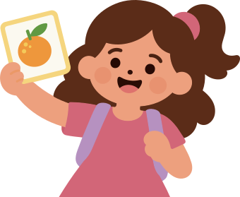
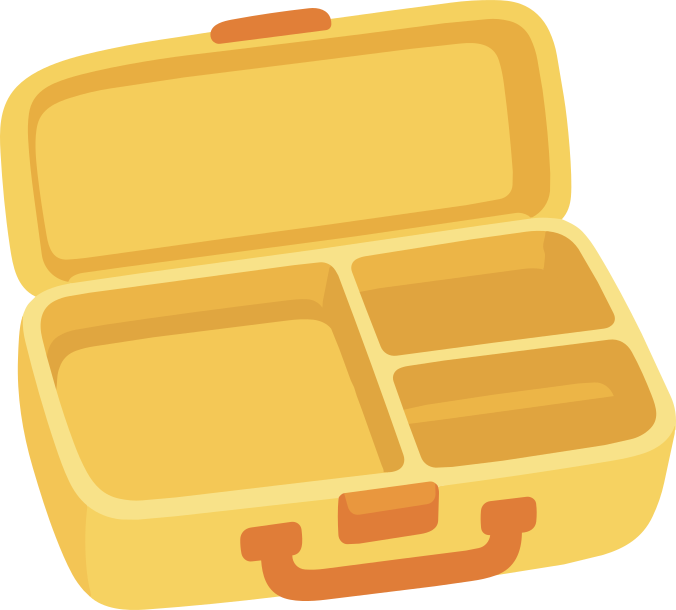

Para personas cuidadoras
Herramientas para tomar decisiones cotidianas.
Experiencias interactivas para comprender situaciones cotidianas, explorar opciones y aprender en familia.
Cada actividad propone una forma distinta de aprender. Algunas están pensadas principalmente para personas cuidadoras y otras para participar junto con niñas y niños.
Explorar juegos


Encuentra el juego que mejor se adapte a lo que quieres resolver o aprender hoy.
Herramientas para tomar decisiones cotidianas.
Actividades para observar, participar y aprender.
Experiencias donde pueden conversar y resolver juntos.
Combinar, observar o investigar: cada juego propone una dinámica diferente.
3 experiencias disponibles

Encuentra distintas combinaciones de lunch según el tiempo y los alimentos disponibles en casa.


Descubre referencias visuales para comprender porciones utilizando las manos y el plato como guía.
Investiga bebidas, compara opciones y descubre cuáles pueden acompañar mejor distintos momentos del día.
Prueba con otra opción o vuelve a consultar todos los juegos.
Elige según lo que quieres resolver hoy.